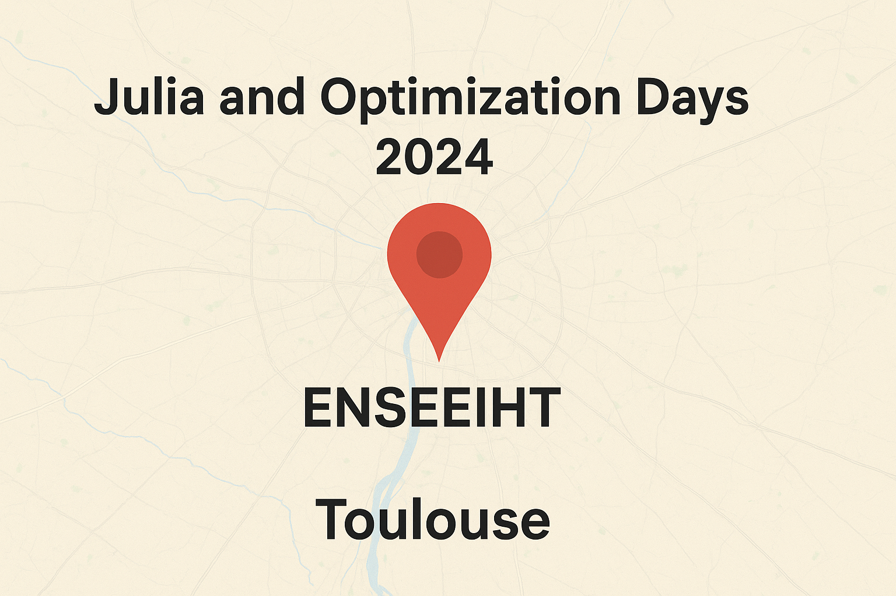

Why Julia?
Welcome to the world of Julia! This page will introduce you to the language, explaining why it’s gaining popularity, and highlighting some key features that make Julia a unique tool for scientific computing and general-purpose programming.
This guide is designed for beginners and provides a comprehensive overview of the Julia programming language. Whether you’re new to programming or an experienced developer looking to learn Julia, this guide will help you get started with the language. If you want to go deeper into specific topics, check out the Julia Documentation and other resources mentioned in this guide. The website Modern Julia Workflows is a great resource for learning advanced Julia programming techniques.
What is Julia?
Julia is a high-level, high-performance programming language primarily designed for technical computing. It combines the best features of other programming languages, including Python’s ease of use, C’s speed, and MATLAB’s support for numerical computation. Julia is open-source and has become a go-to language for scientific research, data analysis, and machine learning applications.
Benefits of Julia
Julia combines the speed of low-level languages like C++ and Fortran with the productivity of high-level languages like Python, MATLAB, and R. Here are some of its key benefits:
Ease of use: Julia offers a simple, intuitive syntax similar to Python and MATLAB, which makes it easy to learn and use, even for those with little programming experience.
Interoperability: Julia integrates well with languages like Python, R, C++, and Java.
High Productivity: Expressive and dynamic, Julia is up to 100x faster than traditional high-level languages.
High Performance: Julia is designed for performance from the ground up. It often performs on par with statically typed languages like C or Fortran, thanks to Just-In-Time (JIT) compilation using LLVM. Support for multi-threading and GPU compute is offered.
Multiple dispatch: Julia uses multiple dispatch as its core paradigm, which allows for highly flexible and efficient function definitions.
Designed for scientific computing: Julia excels in areas such as linear algebra, numerical analysis, and optimization, making it a great choice for data-heavy fields like economics, physics, and engineering.
Composability: Packages are designed to work seamlessly together and with custom code.
Rich Ecosystem: More than 10,000 registered packages and a large community of contributors.
Unified Language: Supports both prototyping and deployment, solving the two-language problem.
The Two-Language Problem
Traditionally, programming required both a high-level, slower language for prototyping and a low-level, faster language for production, causing inefficiencies. Julia unifies these two needs into one language, allowing:
| Aspect | High-Level Language (e.g., Python) | Low-Level Language (e.g., C++) |
|---|---|---|
| Pros | Easy to write and read | Fast in production |
| Cons | Slow in production | Complex, lengthy code |
| Julia’s Solution | Combines ease of high-level with speed of low-level, eliminating the need for separate languages for research and production. |
Comparisons
If you want to know for instance the date of the first public release, the price and the names of the creators of numerical-analysis softwares, please visite the Wikipedia page.
Julia is made for scientific computing as shown by the table below which compares some languages in terms of differential equation solvers. For more details visit this page.
You can find here cheatsheets. One interesting is the comparison with Python and R.
One goal of Julia is to be efficient and high-level. This is illustrated by the following figure given by the Mandelbrot benchmark project.
{kind=link}
Julia Ecosystem
The Julia programming language has a rich ecosystem of tools, platforms, and communities that can help you develop, deploy, and scale your applications. This section will introduce some key components of the Julia ecosystem, including JuliaHub, JuliaSim, JuliaCon, and other important resources. The Julia ecosystem is growing rapidly, offering a wide range of tools for scientific computing, data science, and application development. Platforms like JuliaHub, simulation tools like JuliaSim, and community events like JuliaCon are all central to the ecosystem and provide invaluable resources to Julia users.
JuliaHub
JuliaHub is an online platform developed by Julia Computing that provides cloud-based access to Julia environments. It offers managed Julia instances, making it easier to share and deploy Julia-based projects without the need to worry about local setup. JuliaHub also supports collaboration on Julia projects and integrates with popular tools such as Jupyter notebooks.
Features of JuliaHub include:
- Cloud-based Julia environments: Run Julia code on the cloud without any installation.
- Package management: Seamless integration with Julia’s package manager.
- Collaboration: Share Julia code and data with colleagues and collaborators.
- Jupyter notebooks: Use Jupyter notebooks hosted on JuliaHub for interactive computing.
JuliaSim
JuliaSim is a collection of tools and libraries for modeling and simulation, built using Julia. It is designed for systems simulation in fields such as engineering, physics, and finance. JuliaSim offers several packages and tools to help you build and simulate complex models, as well as visualize and analyze the results.
Features of JuliaSim include:
- Differential equation solving: Tools like DifferentialEquations.jl are used to solve complex systems of differential equations.
- Simulations in science and engineering: Use JuliaSim to simulate and analyze physical, chemical, and biological systems.
- Fast performance: The high-performance capabilities of Julia make JuliaSim ideal for computationally intensive simulations.
JuliaCon
JuliaCon is the annual conference for the Julia community, where developers, researchers, and users come together to share the latest developments, discuss best practices, and showcase their Julia projects. JuliaCon features keynote speakers, tutorials, workshops, and talks on a wide range of topics related to Julia programming.
Key features of JuliaCon:
- Workshops and tutorials: Learn Julia directly from experts through hands-on workshops.
- Networking: Meet fellow Julia users, contributors, and researchers to collaborate on projects and research.
- Talks and presentations: Hear about cutting-edge developments in Julia from experts in various fields.
And a JuliaCon was even held here in Toulouse!
